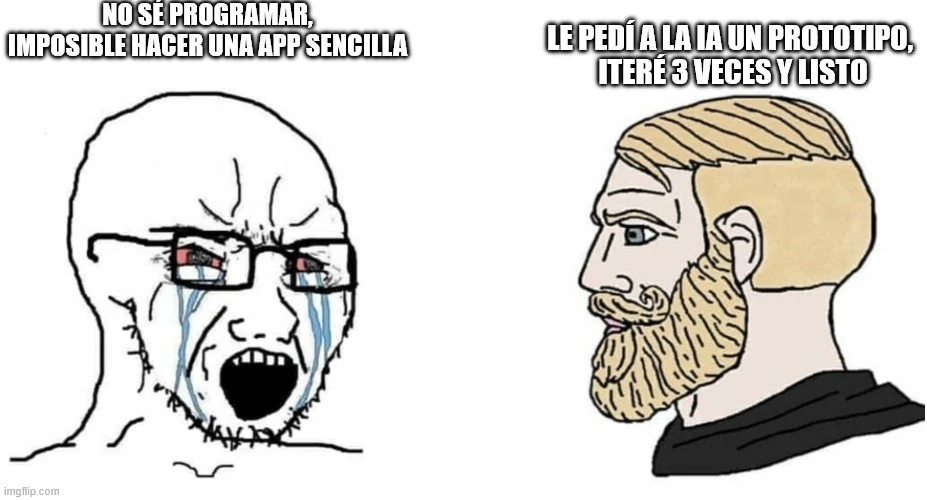

estrategIA #110 ·
La primera aplicación empieza con una petición
El contexto
El número enseñaba a crear un prototipo sencillo conversando con una IA, práctica conocida como vibe coding. Las dos caricaturas contrastan la barrera de no saber programar con probar y corregir. El ejemplo se refiere a aplicaciones sencillas, no garantiza sistemas complejos listos para uso.
Publicado en: estrategIA #110 — La revolución del vibe coding: construya aplicaciones útiles para la política o el gobierno en minutos gracias a la IA
Leer el texto de la imagen
NO SÉ PROGRAMAR, IMPOSIBLE HACER UNA APP SENCILLA LE PEDÍ A LA IA UN PROTOTIPO, ITERÉ 3 VECES Y LISTO
Marca de la herramienta visible en el original: imgflip.com.